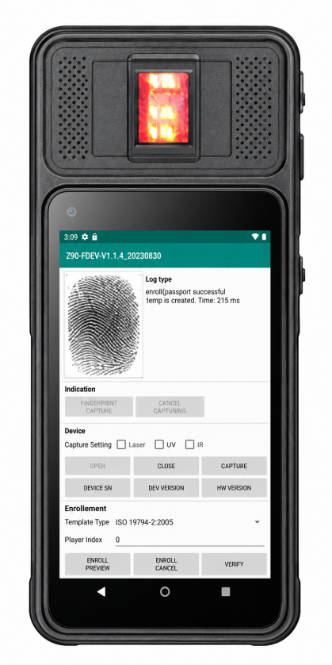

Bank Card Issuance Control with a Biometric Handheld Terminal
Card issuance is not really a printing problem. It is an authorisation problem — and most branch controls still rest on a password someone else can type.

The weak point is rarely the card
Walk into a branch and ask what controls card issuance. In many networks the answer is a mix of three things: the teller's login, a supervisor's verbal approval, and a paper form that gets signed somewhere in the process.
Each of those has a known failure mode. Logins get shared when a colleague is at lunch. Verbal approvals leave no artefact. Paper forms get reconciled later, often days later, and by then the specifics of a busy Tuesday are hard to reconstruct.
None of this is exotic — it is why internal audit keeps flagging issuance and re-issuance as a recurring finding. The gap is not intent; it is that the control lives outside the transaction.
Where a biometric terminal belongs in the flow
The practical fix is to move authorisation into the same moment and the same device as the transaction. On our XH-100 biometric handheld terminal that looks like this:
1. Teller prepares the request. Customer identity is captured on the device — a national ID card read over NFC, or a document barcode scanned with the 2D imager. The teller does not type identity data by hand, which removes the most common source of mismatch.
2. The transaction pauses for approval. Depending on the rule set — new card, replacement card, limit change, dormant account reactivation — the request is routed to the role that must approve it.
3. Supervisor gives a fingerprint, not a password. The approver places a finger on the terminal's sensor. The captured image meets FBI FIPS-201 image quality criteria (the XH-100 offers FAP10, FAP20 or FAP30 modules, 500 dpi, 256 grey levels), so the authorisation is tied to a person rather than to a credential.
4. The record is written once. Who requested, who approved, when, and on which device — captured as one entry instead of being reconstructed from three systems later.
Why fingerprint and not a PIN
A PIN proves that someone knows a number. It does not prove who typed it. In a branch where staff rotate between counters and cover for each other, that distinction is the whole point of the control.
Fingerprint approval does not eliminate collusion, and it is not a substitute for supervision. What it does is remove the cheapest form of work-around — the shared credential — and leave a record that is hard to dispute afterwards.
Designing the permission tiers
The hardware is the easy part. The part worth spending time on is the rule set, which typically looks like a ladder:
Teller — prepares requests, captures identity, handles routine re-issuance within defined limits.
Branch supervisor — approves new issuance, replacements and limit changes up to a threshold.
Regional or head-office role — handles exceptions above the threshold, or overrides when a customer escalates.
Keeping the tiers on the device rather than in the back office is what makes the control real: the approval happens where the customer is standing, not in a queue that clears the next morning.
Practical notes for deployment
A few things matter more than the spec sheet when this reaches a branch:
Sensor choice. FAP10 integrated modules suit fixed counters; optical FAP20/FAP30 options are often preferred where fingers are dry, worn or dusty. Test with your actual staff, not a demo hand.
Enrolment quality. A fingerprint control is only as good as its enrolment. Budget time for re-enrolment — a small percentage of staff will need it, and a failed match during peak hours is what makes staff abandon the process.
Fallback path. There must be a defined, logged exception route for a supervisor who cannot scan on a given day. If the only options are "approve" or "turn the customer away", staff will invent a third one.
Device count. One terminal per counter is rarely needed. Most branches run one per pod, shared between two or three tellers, with the supervisor's approval done on the same unit.
Where the XH-100 fits — and where it does not
The XH-100 is a 5-inch Android handheld with NXP NFC (ISO 14443 A/B, MiFare), full 1D/2D barcode scanning and the fingerprint options above, on a 5,000 mAh battery rated for more than eight hours of continuous work. It is built for counters and mobile branch visits — not as a customer-facing kiosk. If your workflow needs a customer-facing display or a fixed installation, our dual-screen ID verification terminal is the better shape.
For deployments that need Android 12 with Honeywell or Zebra 2D scan engines and a larger screen, the XH-200 6-inch handheld PDA is the higher-throughput sibling. The XH-100 is optimised for identity and authorisation work at a very different price point.
Questions we get asked
Can approval thresholds be configured per branch?
Does the fingerprint image meet banking or government standards?
Can it read contact cards and ID documents?
What happens if the device is lost?
Planning a branch rollout? Send us your workflow, approval tiers and card types — we will confirm module configuration, MOQ and lead time, and flag the parts that usually need adjusting before deployment.